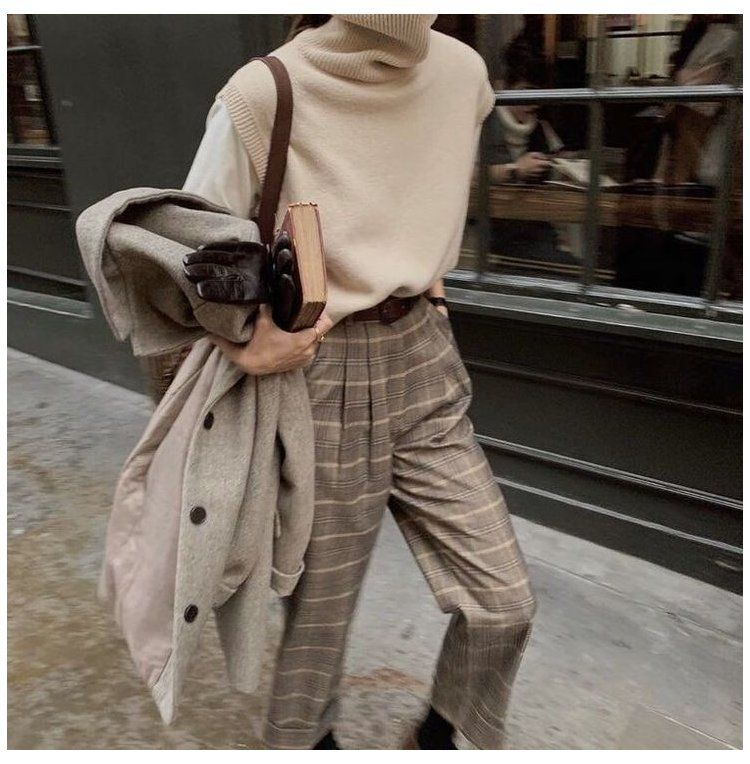
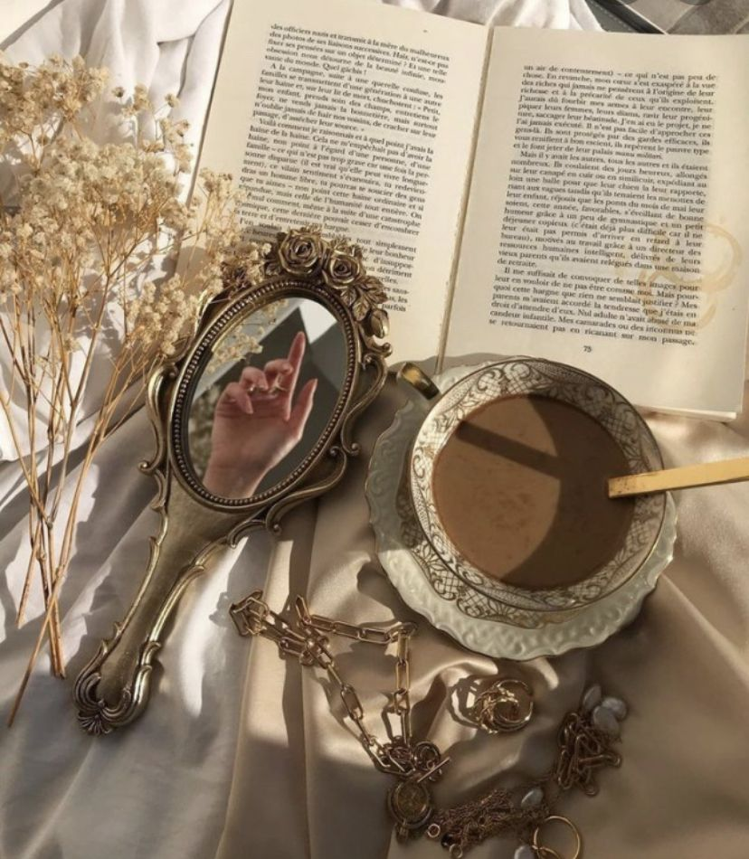
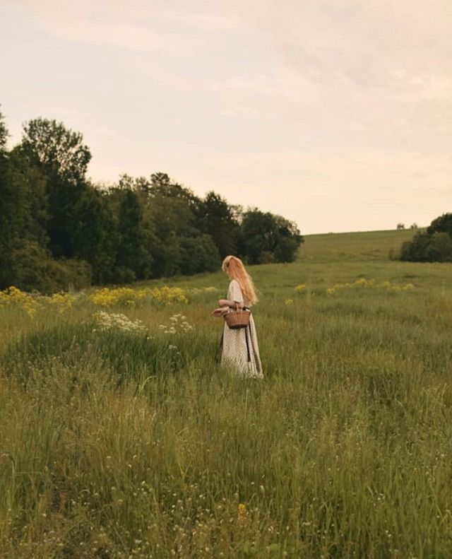
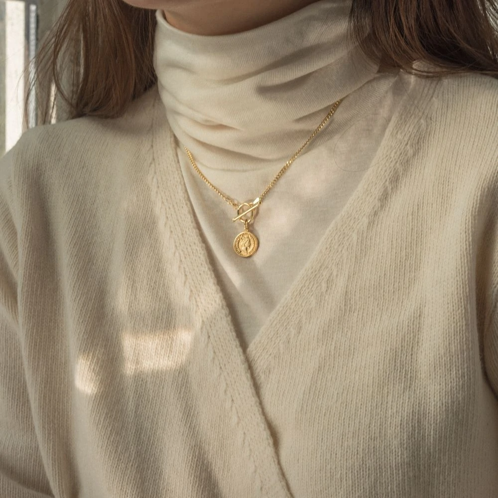
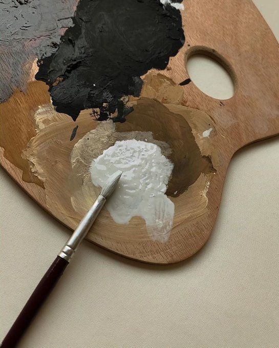
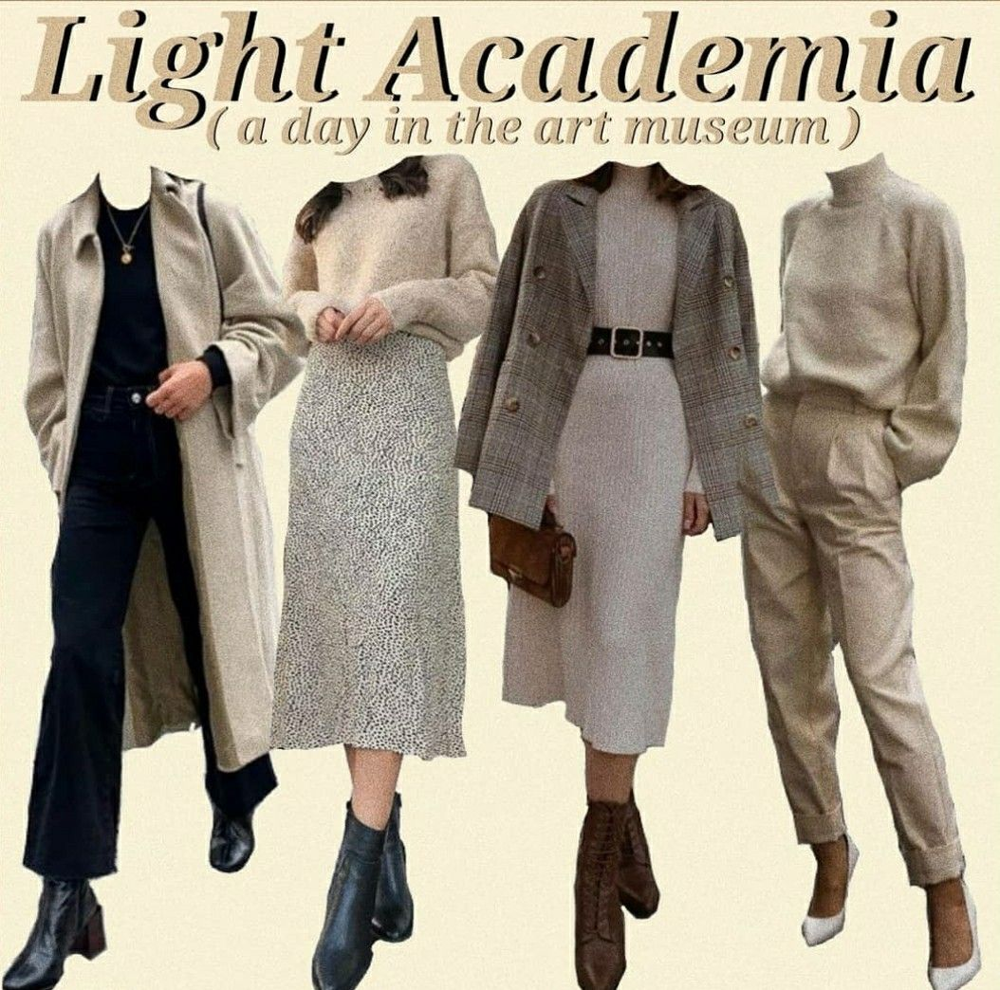

 | Ce este light academia?
Light Academia este o estetică academică și un omolog pozitiv emoțional și mai ușor vizual al Dark Academia.
Dark Academia implică de obicei teme intense și negative emoțional, incluzând tragedia literară, discuția despre sensul vieții, frământarea inimii, opresiunea, escapismul și moartea. În schimb, temele Light Academia sunt, în general, pozitive din punct de vedere emoțional, concentrându-se pe optimism, sensibilitate, bucurie, recunoștință, prietenie, motivație și finaluri fericite. |
Elementele: Cărți antice, muzeele de artă, imagini legate de internat, cum ar fi uniformele și strecurarea, campusuri ale unor universități de prestigiu precum Oxford și Harvard, cafea și ceai, Arhitectura gotică, ziare la cafenele, picturi în perioadele Renașterii, Barocului, Neoclasicului, Academicului, Esteticului și prerafaelitelor, sculptură în perioadele clasice, elenistice, renascentiste, baroce și neoclasice, ceai de plante. |
Look-ul light academia presupune: Topuri, blazere, cardigane, pulovere, pantaloni scurți din in, fuste; Îmbrăcăminte exterioară: trench-uri, paltouri, veste, uniforme; Încălțăminte: Mary Janes, Doc Martensp, pantofi Oxford; accesorii: ochelari, panglici de păr, Șosete înalte, curele din piele, broșe, berete. | |
|  |  |  |  |  |